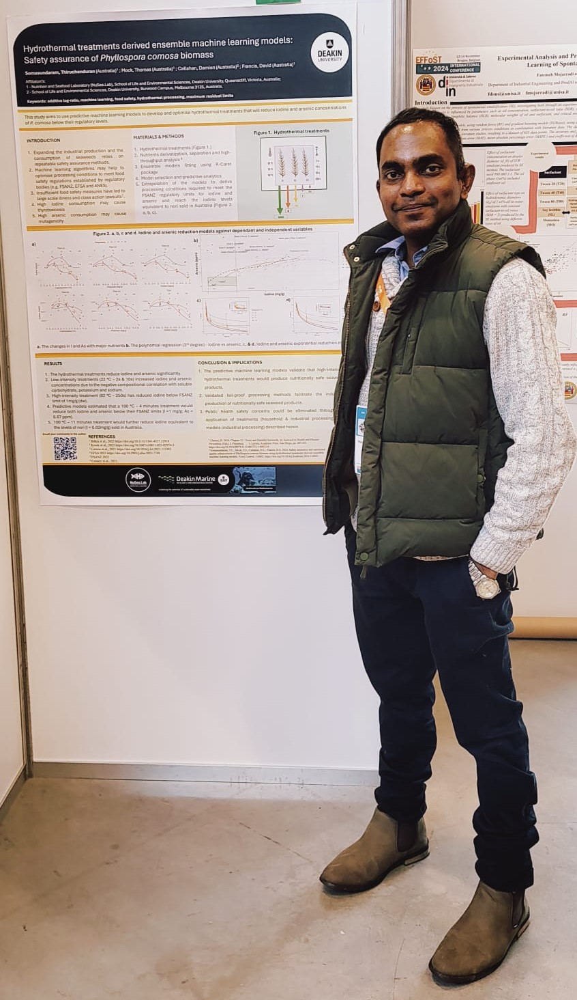

Dr Thiru C. Somasundaram
Scientific Endeavours Towards Sustainable Nutrition and Public Health
Dr. Thiru C Somasundaram
January 1, 2024
Dr. Thiru C Somasundaram, Academic Profile, Research Collaborations, Aquatic Foods, Machine Learning, Student Supervision, Scholarly Metrics, Google Scholar, Research Network, Academic Services
(Open for Postdoctoral and Teaching opportunities and paper collaborations)
A researcher with novel data based strategies towards Sustainable Nutrition and Public Health.
I am currently located at Deakin Marine Centre, Queenscliff, Victoria 3225, Australia. Please say hi to me, if you visit our amazing research facility and want to know more about my research in-person.

Academic activity updates
2025
WIOMSA 2025 - Abstract
What makes food composition data better? An expert checklist for increasing the use of studies reporting aquatic food nutrient data
Thiru Somasundaram, Rita Hannisdal, Doris Rittenshober, Nisha Marwaha, Sian Astley, Fernanda Grande, Bridget Holmes, Molly Ahern, Jessica Zamborain-Mason, Rajandran Anathan, Hettie C Schonfeldt, Kendra Byrd, Lydia O’Meara, Eva Maire, Yuko Nanjo, Kathryn Fiorella, Christopher Golden, Maria Markhus Wik, Sitilitha Masangwi, Matilda Steiner-Asiedu, Shakuntala Thilsted, Monique Mulder, Kirsten Berk, Christina Hicks, Marian Kjellevold
International Community Of Practice On Nutrient Composition Of Aquatic Foods; Includes all the remaining authors https://drthirucsomasundaram.github.io/AFCoPWW/Author_profiles.html
★ Software Launched - Kjeldahl Nitrogen Factor Calculator
A web application for calculating the Kjeldahl nitrogen factor using amino acid content and total Kjeldahl nitrogen of food or feed products. Developed at Deakin University.
Cite: Somasundaram, T.C. (2025). Kjeldahl Nitrogen Factor Calculator [Software]. Zenodo. https://doi.org/10.5281/zenodo.15057026
★ Software Launched - ISO Protein Energy diet formulation
An interactive web-based calculator for formulating and optimizing experimental feed compositions. This tool helps researchers and nutritionists create iso-protein and iso-energetic experimental diets.
Cite: Somasundaram, T.C. (2025). Diet Formulation Calculator: A Tool for Iso-Protein and Iso-Energy Feed Formulation (v1.0.0). Zenodo. https://doi.org/10.5281/zenodo.15029930
IFDC 2025 - Abstract
14th International Food Data Conference (IFDC) Bridging the Data Gap: Expert guidelines for the reporting of analytical data in aquatic foods for use in food composition databases Thiruchenduran Somasundaram; Rita Hannisdal; Doris Rittenschober, Nisha Marwaha; Bridget Holmes; Fernanda Grande; Molly Ahern; Kendra Byrd; Siân Astley; Christina Hicks; Marian Kjellevold; International Community Of Practice On Nutrient Composition Of Aquatic Foods; Includes all the remaining authors https://drthirucsomasundaram.github.io/AFCoPWW/Author_profiles.html
★ Paper submitted - Nature Scientific Reports (IF 3.8 - Q1)
Submitted - Brute force simulation as a tool in estimating phyto-phyco aquafeed nutrient losses - Hydrothermal processing of Phyllospora comosa co-authored with Tom Mock, Damien Callahan and David Francis of Deakin University
IUNS-ICN
Abstract submitted to the International Congress of Nutrition of International Union of Nutritional Sciences, France August 2025.
Title: Expert guidelines on improving the quality of published aquatic food nutrient composition data for their inclusion in FCTs, FCDs, and evidenced based nutritional plans, policies and programmes.
Authors: Thiruchenduran Somasundaram1; Rita Hannisdal2; Siân Astley3; Hettie Schönfeldt4; Ananthan Rajendran5; Doris Rittenschober6; Fernanda Grande6; Sitilitha Masangwi7; Kendra Byrd8; Christina Hicks9; Marian Kjellevold10; International Community Of Practice On Nutrient Composition Of Aquatic Foods11
IMR: Bergen, Norway
A brainstorming collaborative activity was carried out at Institute of Marine Research, Bergen from the 20th - 24th January, 2025 for the preparation of best practice checklist and guidance for producing aquatic food nutrient composition data. The activity was carried out between Dr. T C Somasundaram, Professor M Kjellevold, and Dr R Hannisdal
ICoP: Rome, Italy
A collaborative manuscript drafting workshop with the aquatic food composition database experts from America, Australia, Belgium, France, Ghana, India, Italy, Malawi, South Africa, Spain, and United Kingdom. This writing workshop lasted for four days from the 14th - 17th January. The sessions resulted in three draft future focused manuscripts.
2024
★ Published- Food Research International (IF 7 - Q1)
The third paper from my Ph.D. thesis was published in the Food Research Interantional, an Elsevier journal. The paper titled Nutrient based classification of Phyllospora comosa biomasses using machine learning algorithms: Towards sustainable valorisation was co-authroed with Tom Mock, Damien Callahan and David Francis of Deakin University
★ Published- Algal Research (IF 4.6 - Q1)
The second paper from my Ph.D. thesis was published in the Algal Research, an Elsevier journal. The paper titled Solid-state anaerobic fermentation of crayweed (Phyllospora comosa) biomass for nutrient stabilisation was co-authroed by Tom Mock, Damien Callahan and David Francis of Deakin University
SLCARP Awards, Colombo
The NANSEN project was awarded one of the SLCARP prestigious national awards for the excellence in research on the 16th December 2024. This award (1st place) was given to the entire team who participated in the FAO - EAF NANSEN project. The team has conducted an ecosystem survey in Sri Lankan waters while on-board the R/V Dr Fridtjof Nansen.
BOKU University, Vienna, Austria
An academic and a paper discussion at the BOKU University, Vienna with a Ph.D. Scholar
Bonn University, Bonn, Germany
Had a priviledge to visit the oxysterol labs at the Department of Clinical Pharmacology, Bonn University and listen to an informative lecture from Prof. Dieter Lütjohann.
Erasmus MC, Rotterdam, The Netherlands
A training on the fucosterols estimation and their functionalities was carried out at the Lipid Labs at Erasmus Medical Centre, Rotterdam for the fermentation samples from my Ph.D. work.
EFFoST - Brugges, Belgium
Presented two of my Ph.D. papers (one published and one draft) at the European Federation for Food Science and Technology conference at Brugges, Belgium in November 2024.
★ Ph.D. Graduation at Deakin
Officially graduated at the Deakin University graduation ceremony at Deakin Waterfront on the 19th of September 2024.
★ Published- Food Control (IF 5.6 - Q1)
The first paper from my Ph.D. thesis was published in the Food Control, an Elsevier journal. The paper titled Nutrient based classification of Phyllospora comosa biomasses using machine learning algorithms: Towards sustainable valorisation was co-authroed by Tom Mock, Damien Callahan and David Francis of Deakin University
Casual research fellow
Appointed as a casual research fellow at NuSea.Lan to complete a project in collaboration with AIMS - RRAP project on Novel Hetero tropic Coral Nutrition aiming to complete the project by the end of the year.
2023
Agrifutures Travel grant to attend ISS2023
Agrifutures awarded a travel grant and conference registration scholarship, helping me to attend the international seaweed symposium 2023 in Hobart, Tasmania, Australia.
2022
Rural and regional scholarship award SMP2022 AUS
The rural and regional award to meet Australian parliamentarians and discuss further advancing the STEM research around my Ph.D. topic area. I was lucky to meet Honorable MP Libby Cooker of the Corangamite Shire of Victoria using this scholarship and was able to meet the other fellows at the gala dinner at RMIT campus.
2021
Deakin Warrnambool, Melbourne, Australia
I delivered a lecture on sustainable use of seaweeds in agriculture to the visiting consular corps Melbourne at Deakin Warrnambool campus.
RACI - Early Career Chemist Group - event with STA
I organised a career guidance event along with the Queensland Royal Australian Chemical Institute officials for early career chemists in Australia. The CEO of the Science and Technology Australia gave a speech on science careers and the Science Meet Parliament event.
★ Published Journal of Environmental Management (IF 8 - Q1)
A paper on the use of seaweeds as a resource for environmental applications was collaboratively published in the Journal of Environmental Management, an Elsevier journal. Immobilization and retention of caffeine in soil amended with Ulva reticulata biochar was co-authroed by S. Keerthanan, Chaminda Gunawardane, Tharuka Jayampathi, Chamila Jayasinghe, and Meththika Vithanage
2020
★ Published Foods(IF 4.7 - Q1)
A paper describing the nutrient composition of Bangladesh fish species was published in the Foods, an MDPI journal, in collaboration with the EAF-Nansen team. The paper titled Nutrient Composition of Demersal, Pelagic, and Mesopelagic Fish Species Sampled Off the Coast of Bangladesh and Their Potential Contribution to Food and Nutrition Security—The EAF-Nansen Programme was co-authroed by Anna Nordhagen, Abu Ansar Md. Rizwan, Inger Aakre, Amalie Moxness Reksten, Lauren Michelle Pincus, Annbjørg Bøkevoll, Al Mamun, Shakuntala Haraksingh Thilsted, Thaung Htut, and Marian Kjellevold
★ Published Journal of Food Composition and Analysis (IF 4 - Q1)
A paper describing the nutrient composition of Sri Lankan fish species was published in the Journal of Food Composition and Analysis, an Elsevier journal, in collaboration with the EAF-Nansen team. The paper titled Nutrient composition of 19 fish species from Sri Lanka and potential contribution to food and nutrition security was co-authroed by Amalie Moxness Reksten,Marian Kjellevold, Anna Nordhagen, Annbjørg Bøkevoll, Lauren Michelle Pincus, Abu Ansar Md. Rizwan, Al Mamun, Shakuntala Haraksingh Thilsted, Thaung Htut, and Inger Aakre
Seaweed Solutions Workshop, Hobart, Tasmania
I was invited to present my Ph.D. project proposals and network with students at UTas, Hobart, Tasmania.
2019
DemoDAIRY Foundation scholarship
DemoDAIRY foundation scholarship was awarded to me to carryout research work on the applications of seaweeds as livestock feed.
Invited lecture, Kanpur
Delivered an invited lecture on “Marine Food and Nutritional Resources” under the CAAST-NC project organized under the title “Recent Advances in Functional and Nutraceuticals for Future Foods” at Chandra Shekhar Azad University of Agriculture and Technology, Kanpur, Uttar Pradesh, India for Master students, Ph.D. students & Faculty members on 20/07/2019,
FAO Workshop, Rome
Attended the workshop on nutrition and food safety at FAO, Rome, from 2-4 July 2019 and made a presentation on “Nutrition and Food Security - issues from an Asian perspective”. Further, engaged in the workshop in furthering the manuscripts from the EAF-NANSEN survey 2017.
2018
IMR Workshop, Bergen
Workshop on Nutrition and Food Safety, Institute of Marine Research. Bergen 13-15 November 2018 Based on EAF Nansen Ecological Survey conducted on board of research vessel Dr Fridtjof Nansen in 2018
FAO- EAF-Nansen Cruise
A 23 days on-board scientist (Nutrition and Food Safety) of the Research Vessel Dr Fridjtof Nansen, Norweigian scientific cruise.